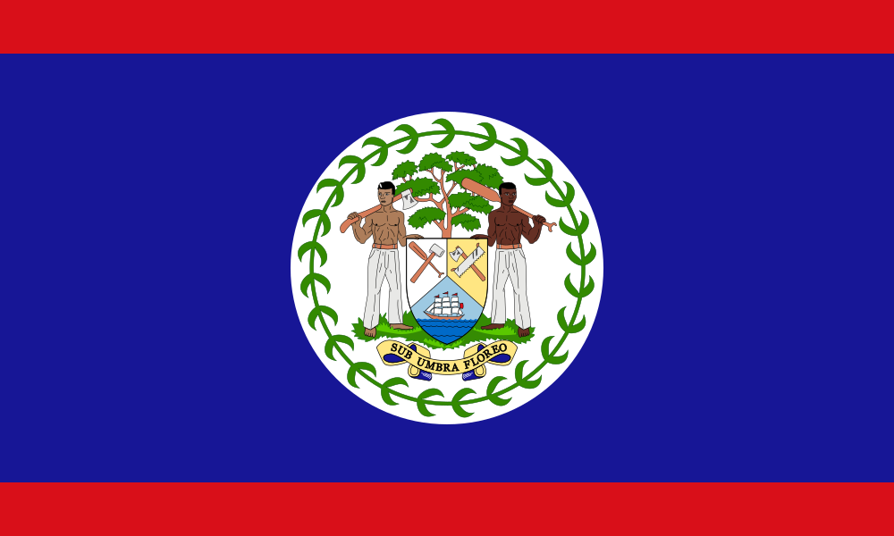

¿Quiénes somos?
Somos una página orientada a personas extrajeras y por qué no, locales, que en algún momento quisieran descubrir y viajar por algún país de Centroamérica pero no saben con certezas que lugares son impensables no visitar.
¿Qué encontrarás?
Encontrarás los destinos turísticos más destacables de cada país dentro de la region centroamericana, desde rutas turísticas hasta los más recurrentes lugares como podrían ser lagos, montañas, volcanes, etc .Y claramente no pueden faltar las más representativas playas.
Reseñas de países centroamericanos
Centroamérica
América Central, también nombrada como Centroamérica, es la región geográfica dentro del continente americano comprendida entre América del Norte y América del Sur. Está rodeada por el océano Pacífico y el océano Atlántico lo que le da una gran variedad de destinos turísticos para visitar.

Guatemala

Guatemala, un país de América Central al sur de México, tiene volcanes, bosques tropicales y antiguos sitios mayas. La capital, Ciudad de Guatemala, cuenta con el imponente Palacio Nacional de la Cultura y el Museo Nacional de Arqueología y Etnología.
Belice
Belice es un país de la costa este de América Central, con riberas en el mar Caribe hacia el este y una selva densa al oeste. Frente a sus costas, la enorme Barrera del Arrecife de Belice, con cientos de islas bajas llamadas cayos, es hogar de una abundante fauna marina.


Honduras

Honduras es un país de América Central con costas en el mar Caribe al norte y en el océano Pacífico al sur. En el bosque tropical cerca de Guatemala, el antiguo sitio ceremonial maya de Copán tiene jeroglíficos tallados en piedra y estelas, altos monumentos de piedra.

El Salvador

Es conocida por sus playas en el océano Pacífico, los sitios de surf y el paisaje montañoso. Su Ruta de las Flores es un camino serpenteante que pasa por plantaciones de café, bosques tropicales con cascadas y ciudades como Juayúa, con sus festivales gastronómicos cada fin de semana, junto con Ataco, donde hay alegres murales.


Nicaragua

Nicaragua es un país de América Central ubicado entre el océano Pacífico y el mar Caribe, conocido por su espectacular territorio con lagos, volcanes y playas. El extenso lago Managua y el icónico estratovolcán Momotombo se ubican al norte de la capital, Managua.

Costa Rica

Costa Rica es un país de América Central con una geografía accidentada, que incluye bosques tropicales y costas en el Caribe y el Pacífico. Aunque su capital, San José, es hogar de instituciones culturales, como el Museo del Oro Precolombino, Costa Rica es conocida por sus playas, sus volcanes y su biodiversidad.

Panama

Panamá es un país ubicado en el istmo que une América Central y América del Sur. El Canal de Panamá, un famoso hito de la ingeniería humana, atraviesa su centro y une los océanos Atlántico y Pacífico para crear una ruta marítima esencial.